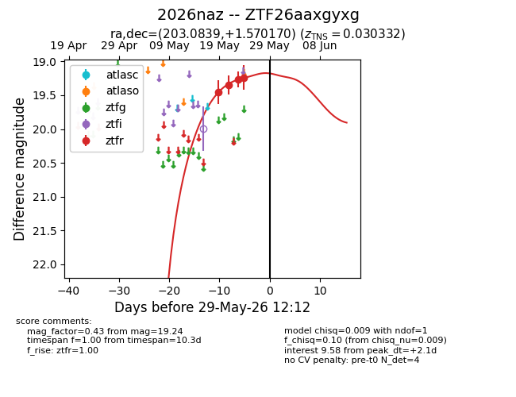
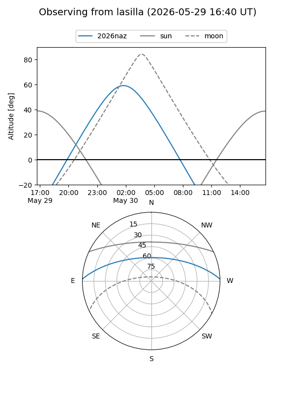
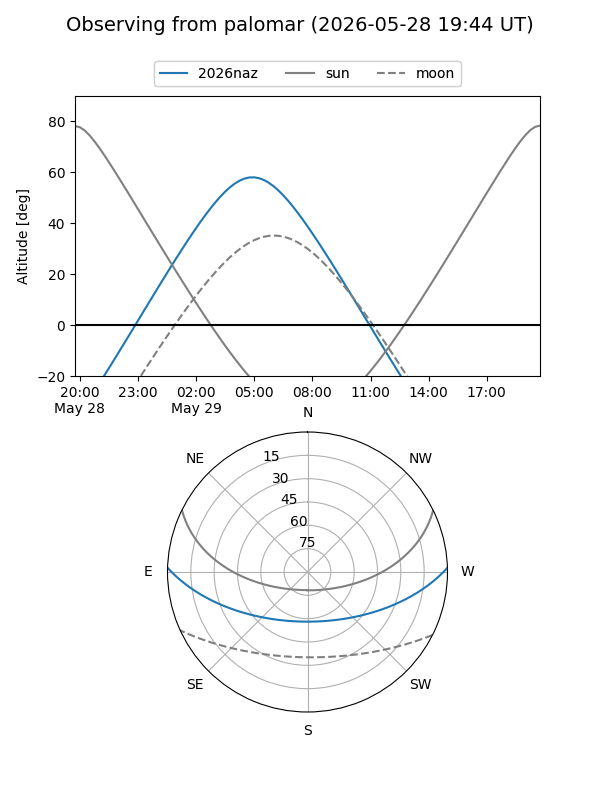
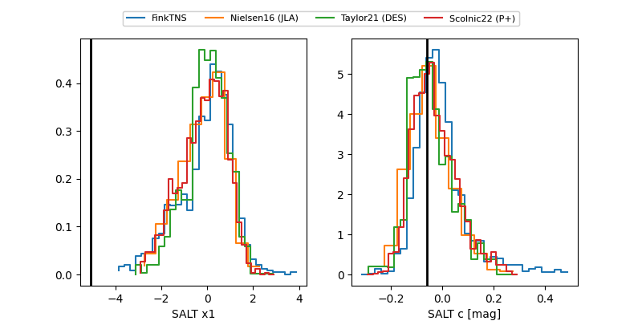

2026naz
Target 2026naz at 2026-05-29 12:16
Aliases and brokers:
lsst-FINK: link
lsst-Lasair: link
lsst-ALeRCE: link
ztf-FINK: link
ztf-Lasair: link
ztf-ALeRCE: link
TNS: link
YSE: link
alt names
ZTF26aaxgyxg (ztf,fink_ztf)
2026naz (tns,yse)
Coordinates:
equatorial (ra, dec) = 203.0839,+1.57017
equatorial (HMS+DMS) = 13:32:20.13,+01:34:12.61
galactic (l, b) = (325.6314,+62.62559)
Flags:
TNS confirmed: SN Ib
TNS redshift: 0.030332
Photometry:
last ztfr=19.24
4 ztfr detections
Lightcurve

Visibility


Additional plots
